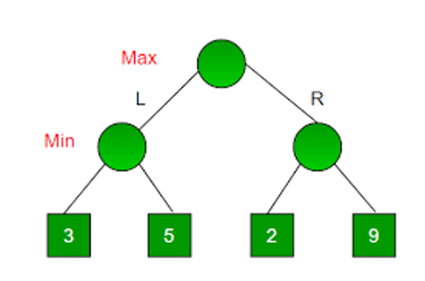
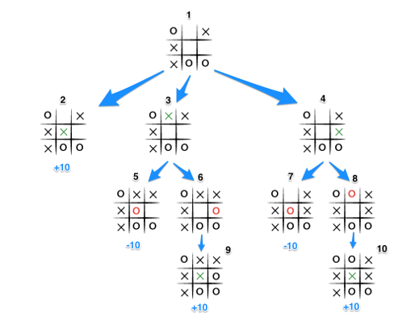

Един от примерите, които могат да се дадат за “Minmax”, е при вземане на решение в дърво.
Принципите на алгоритъма са аналогични и обработката на дървото започва отдолу. Първият ход е този на “противника”, който избира
най-лошият вариант за играча. Това в едно двуично дърво ще означава, че първият избор е възелът от най-ниско ниво, с по-малка стойност.
По този начин “печалбата” на играча започва с минимална стойност. След като се премине на второто ниво на дървото обаче, е ред на “играча”.
Това означава, че между двата възела ще се избере по-големият по стойност. Този процес се повтаря до достигането на най-горното ниво на
дървото и тогава ще се получи “решението” на дървото.

Методът “Minmax”, и неговото “решение”, взето от двуично дърво,
може да се използва при създаване на изкуствен интелект за игри като шах и морски-шах. Това става като се приеме, че
всеки възел е състояние на играта, където като се мине през всеки ред на “опонента” се избира най-добрият вариант. Всеки
резултат взет от тези възли определя какъв ще бъде най-добрият ход на дадения “играч”. За разлика от едно просто двуично дърво,
играта на шах има безброй състояния през които трябва да се мине за да приключи играта. Същото важи за игри като дама и го. Това
означава, че броят на изчисления и сравнения, които трябва да се изпълният, водят до голяма нужда от ресурси. За да се смекчи този
негатив се използва метод за оптимизиране, именно алфа-бета подрязването. То работи на принципа, че броя на възлите, като премахва
клоните, които нямат ефект над крайното състояние на играта. Това се постига чрез две променливи, алфа и бета, които приемат максималната
и минималната стойност гарантирани на максимизатора (играча). За да се изгради шахматна машина, способна да играе по най-оптималният
начин, се използва съвкупност от “Minmax”, алфа-бета подрязване, така и Евристични функции за оценка. Тези функции се характеризират с
това, че за тях няма изготвен алгоритъм, който да даде точнен резултат. Тяхната ефективност се гради на “опита” на програмата. Този опит
се изгражда чрез много итерации и обучение докато не се достигне състояние на оптималност. Този вид функция служи за оценяване на
стойността на нетерминалните възли, като вземат предвид фактори като материален баланс, активност на фигурата, безопасност на краля и
структура на пешката.
